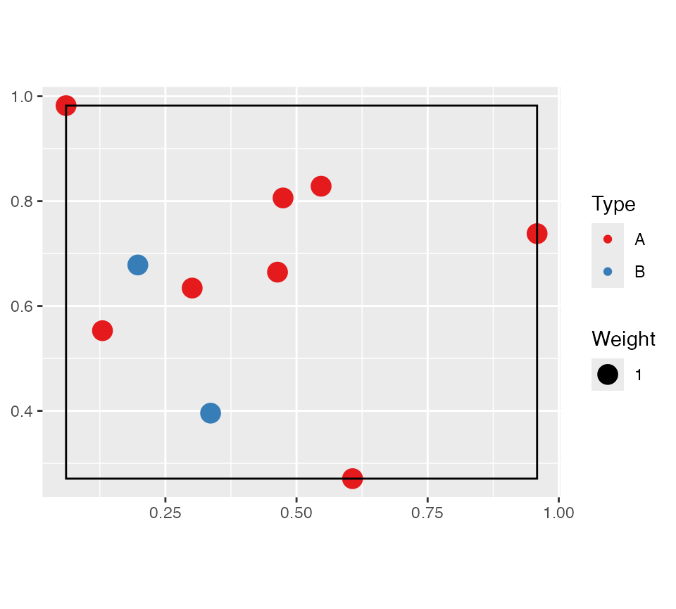

The dbmss package allows simple computation of spatial statistic functions of distance to characterize the spatial structures of mapped objects, including classical ones (Ripley’s K and others) and more recent ones used by spatial economists (Duranton and Overman’s \(K_d\), Marcon and Puech’s \(M\)). It relies on spatstat for some core calculation.
This vignette contains a quick introduction.
Data
The main data format is wmppp for weighted, marked point pattern. It inherits from the ppp class of the spatstat package.
A wmppp object can be created from the coordinates of points, their type and their weight.
library("dbmss")
# Draw the coordinates of 10 points
X <- runif(10)
Y <- runif(10)
# Draw the point types.
PointType <- sample(c("A", "B"), 10, replace=TRUE)
# Plot the point pattern. Weights are set to 1 ant the window is adjusted
autoplot(wmppp(data.frame(X, Y, PointType)))
An example dataset is provided: it is a point pattern from the Paracou forest in French Guiana. Two species of trees are identified, other trees are of type “Other”. Point weights are their basal area, in square centimeters.
# Plot (second column of marks is Point Types)
autoplot(paracou16,
labelSize = expression("Basal area (" ~cm^2~ ")"),
labelColor = "Species")
Main functions
The main functions of the packages are designed to calculate distance-based measures of spatial structure. Those are non-parametric statistics able to summarize and test the spatial distribution (concentration, dispersion) of points.
The classical, topographic functions such as Ripley’s K are provided by the spatstat package and supported by dbmss for convenience.
Relative functions are available in dbmss only. These are the \(M\) and \(m\) and \(K_d\) functions.
The bivariate \(M\) function can be calculated for Q. Rosea trees around V. Americana trees:

Confidence envelopes
Confidence envelopes of various null hypotheses can be calculated. The univariate distribution of Q. Rosea is tested against the null hypothesis of random location.
autoplot(KdEnvelope(paracou16, , ReferenceType="Q. Rosea", Global=TRUE), main="")## Generating 100 simulations by evaluating expression ...
## 1, 2, 3, 4, 5, 6, 7, 8, 9, 10, 11, 12, 13, 14, 15, 16, 17, 18, 19, 20, 21, 22, 23, 24, 25, 26, 27, 28, 29, 30, 31, 32, 33, 34, 35, 36, 37, 38, 39, 40,
## 41, 42, 43, 44, 45, 46, 47, 48, 49, 50, 51, 52, 53, 54, 55, 56, 57, 58, 59, 60, 61, 62, 63, 64, 65, 66, 67, 68, 69, 70, 71, 72, 73, 74, 75, 76, 77, 78, 79, 80,
## 81, 82, 83, 84, 85, 86, 87, 88, 89, 90, 91, 92, 93, 94, 95, 96, 97, 98, 99, 100.
##
## Done.
Significant concentration is detected between about 10 and 20 meters.